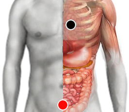

Resentimiento
Pares
corazón - vejiga
cardias - vejiga
esternocleidomastoideo - ECM
esternocleidomastoideo - hipófisis

Generalidades:
Es un par de tipo emocional. Resentimiento o la incapacidad de perdonar o de olvidar ofensas reales o imaginarias sufridas por la persona.